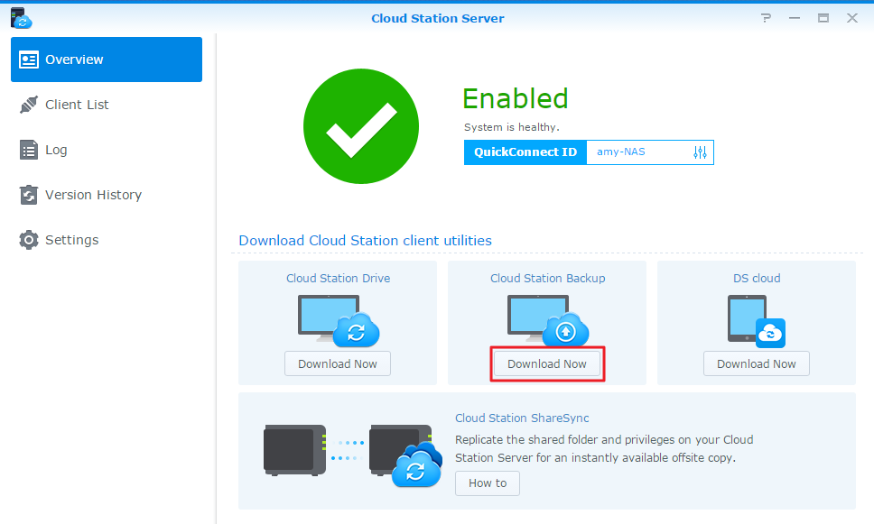
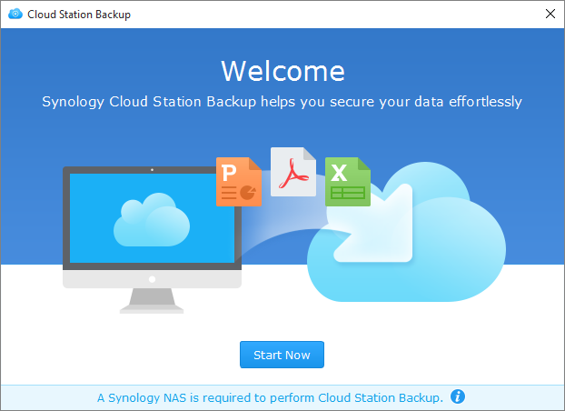
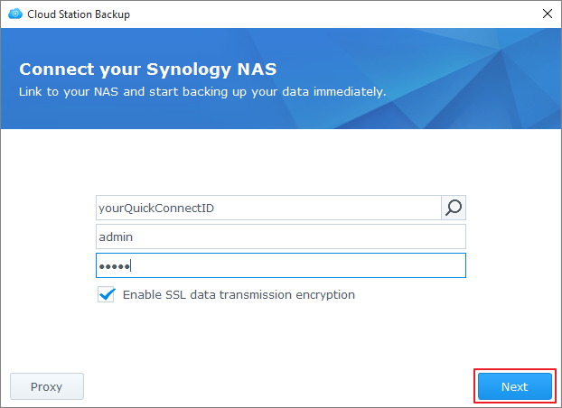
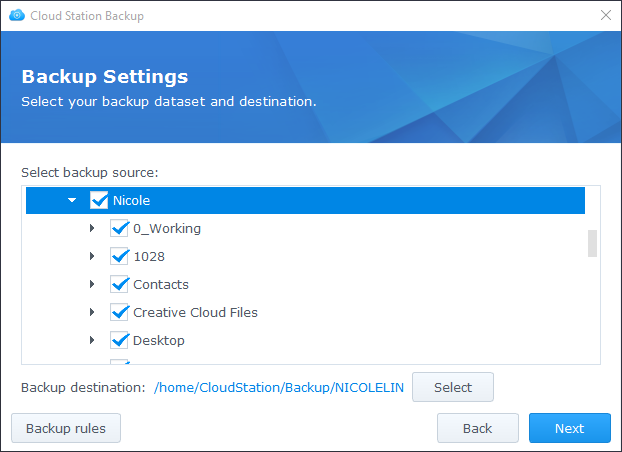
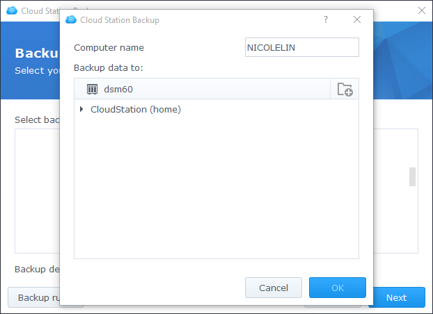
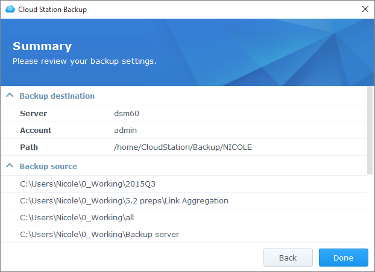
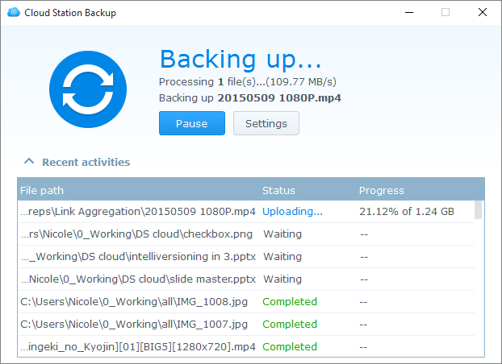

Visão Geral
Cloud Station Server é mais que um software sofisticado de sincronização entre diversas plataformas, pois os utilizadores podem usá-lo como uma forma mais inteligente de salvaguardar os seus computadores pessoais. Uma solução de cópia de segurança em tempo real, Cloud Station Backup é instantânea e poupa largura de banda, proporcionando melhor proteção até 32 versões históricas de um só ficheiro.
Configurar o Cloud Station Server no Synology NAS
- Aceda ao Centro de Pacotes, localize Cloud Station Server, e depois clique em Instalar.
- Inicie o Cloud Station Server.
- Aceda a Visão Geral e clique em Transferir Agora em Cloud Station Backup. (Também pode transferir a Cloud Station Backup a partir do Centro de Transferências da Synology.) 
- Inicie o instalador no seu computador e siga as instruções para instalar a Cloud Station Backup.
- Depois da instalação, execute a Cloud Station Backup no seu computador. Clique em Começar Agora. 
- Introduza o endereço do Synology NAS que executa o Cloud Station Server (ou QuickConnect ID), nome de utilizador e palavra-passe. (Pode também clicar no ícone de pesquisa à direita, e Cloud Station Backup irá pesquisar automaticamente outro Synology NAS dentro da sua LAN). Clique em Seguinte. 
- Selecione a fonte de cópia de segurança e desmarque quaisquer subpastas que não deseja sincronizar. 
- Selecione uma pasta no seu Synology NAS clicando em Selecionar. Cloud Station Backup irá criar uma pasta de cópia de segurança no destino selecionado com o seu nome de computador. A pasta home será selecionada como pasta de destino predefinida. Caso deseje usar uma pasta que não esteja na lista, contacte o seu administrador de sistema. Administradores de sistema podem consultar a secção Gerir partilha do Cloud Station Server na Ajuda Cloud Station Server. 
- Clique em Regras de cópia de segurança se desejar definir filtros ou regras de sincronização.
- Clique em Seguinte para rever as definições de cópia de segurança, e depois clique em Concluído. 
- Pode ver o progresso de cópia de segurança na aplicação principal. 
Transferir ou restaurar uma versão anterior de um ficheiro sincronizado na Cloud Station Server
- Aceda a Cloud Station Server> Histórico de Versões e localize o ficheiro ou pasta que deseja restaurar.
- Selecione o ficheiro que pretende recuperar e clique em Ação. Clique em Percorrer versões anteriores. Se um ficheiro tiver sido eliminado ou removido de forma acidental no seu computador, pode clicar em Restaurar para o restaurar.
- Selecione a versão do ficheiro que pretende transferir e clique em Transferir. Ou, se tiver a certeza de que pretende a versão a selecionada restaurada, clique em Restaurar e irá sobrepor a sua versão atual.


5. Proteção adicional dos seus dados
Para consultar mais formas para proteger e efetuar cópia de segurança dos seus dados, clique aqui para aceder aos tutoriais que detalham outros serviços de cópia de segurança disponibilizados no DSM.